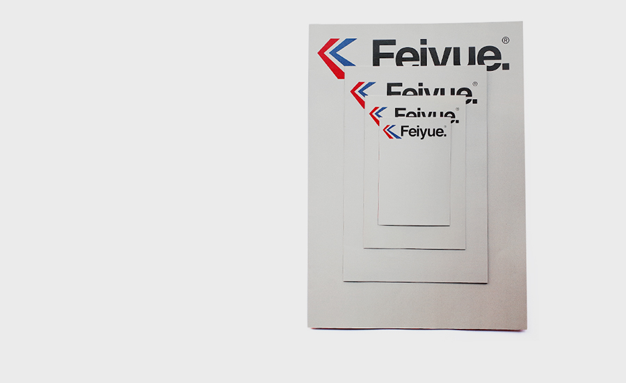
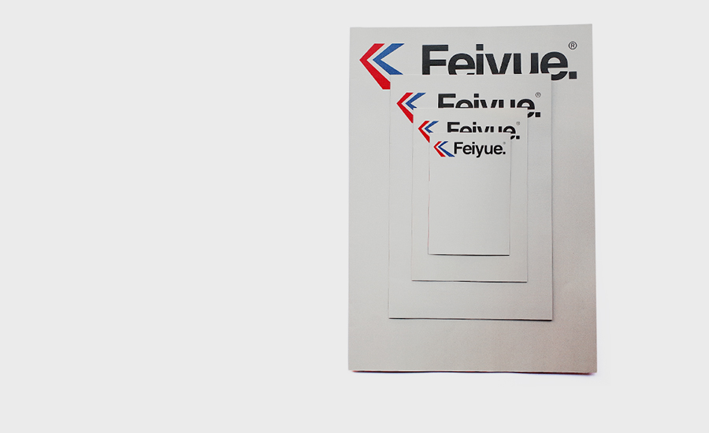
 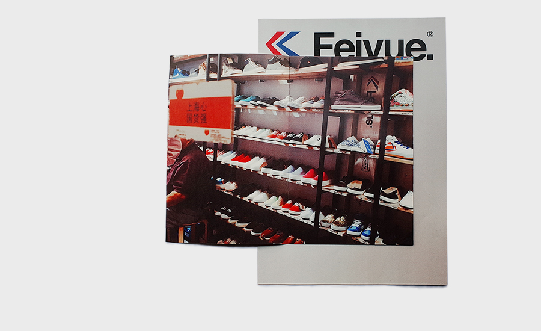
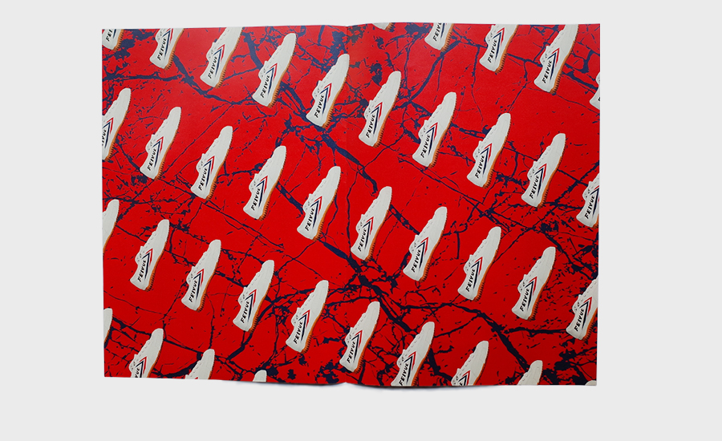
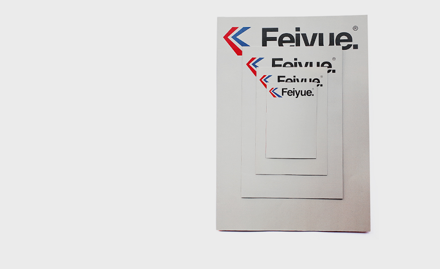
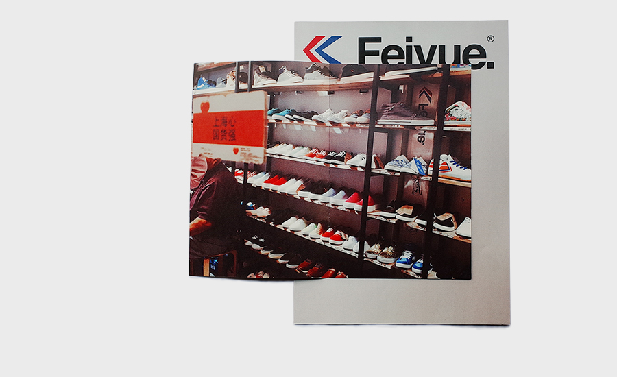
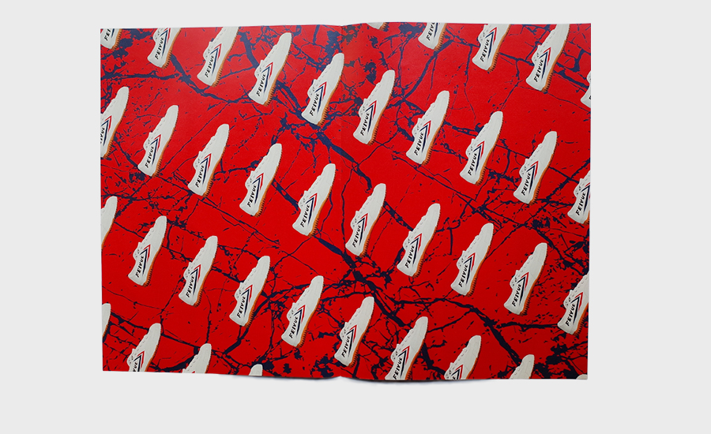
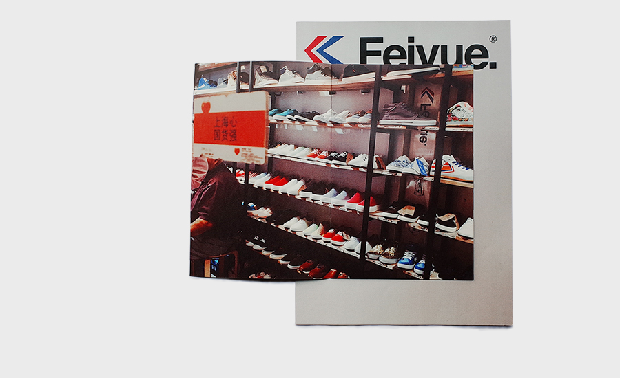
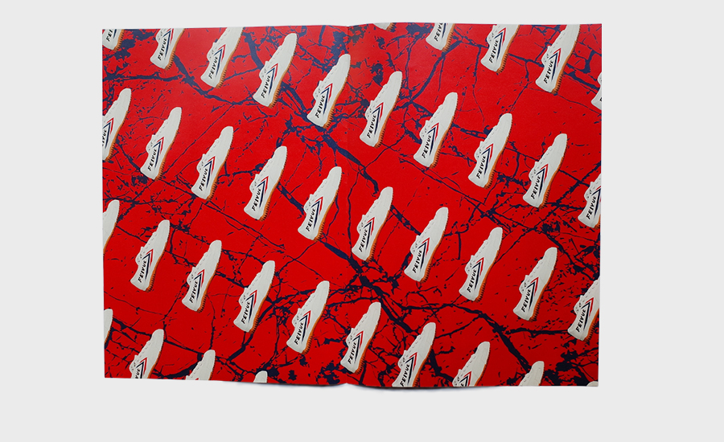
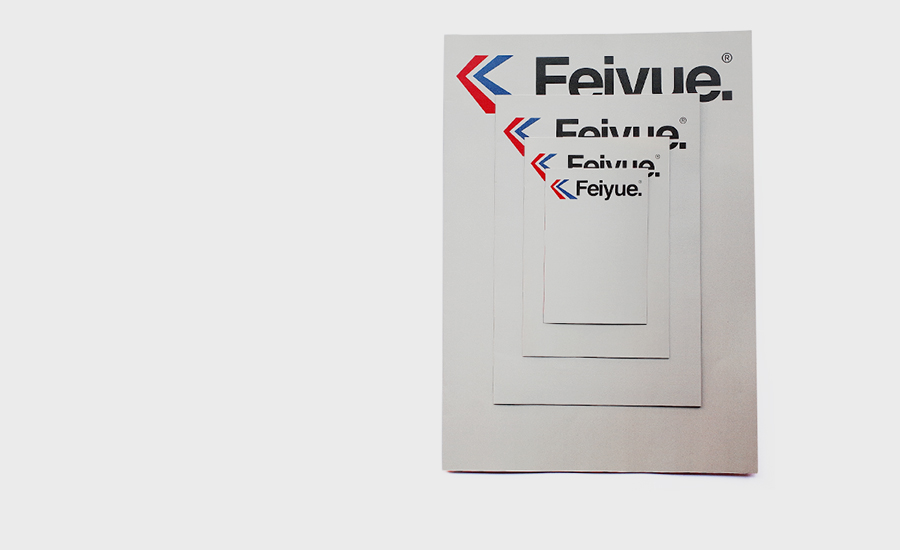
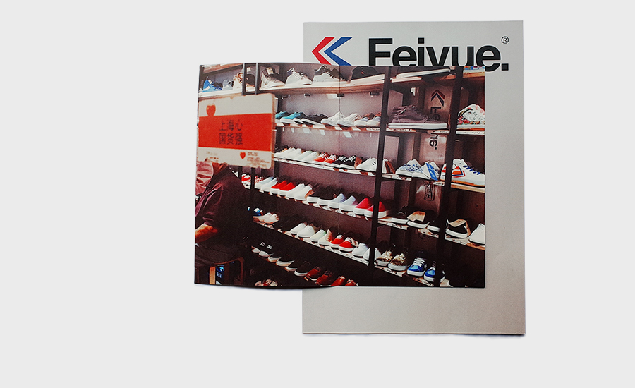
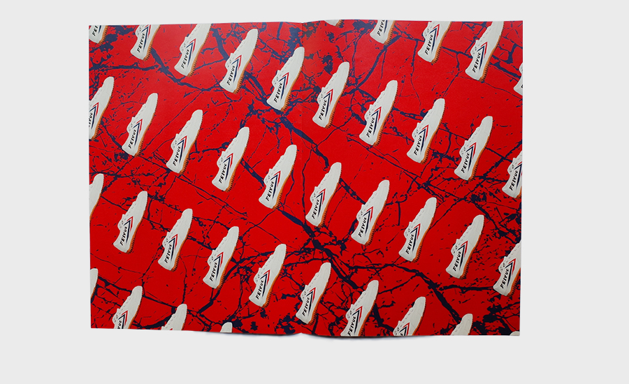
As an intern at PINWU Design Studio, I worked on the Nong exhibit for Dutch Design Week 2009 in Eindhoven, Netherlands.
I was responsible for the 'Plant Ashes' section of the exhibit.
We packaged these ashes as an everyday household detergent that could also remind people of a simpler time.

I got the idea after watching my grandmother scrubbing pans with wheat ashes, a traditional way to do the dishes in China.